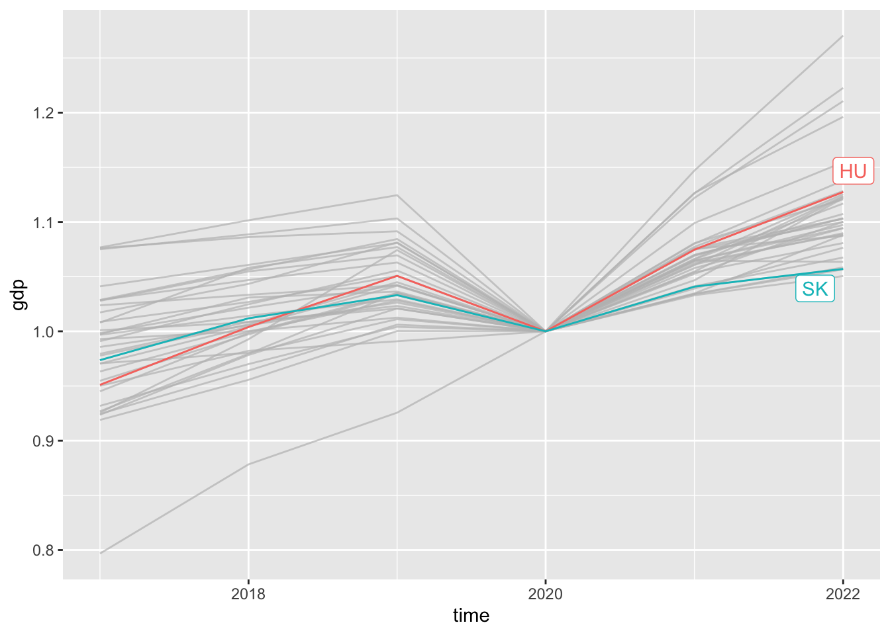

Advanced ggplot2
Readings and class materials for Tuesday, October 17, 2023
We reviewed the basic functionality of the main R visualization package. This is the ggplot2. In this chapter, we will focus on applying this in more complex situations and consider which visualization solutions are appropriate in different cases.
Time-series
eurostat::search_eurostat("Gross domestic product")# A tibble: 13 × 8
title code type `last update of data` last table structure…¹ `data start`
<chr> <chr> <chr> <chr> <chr> <chr>
1 Gross … nama… data… 21.02.2023 19.02.2023 2000
2 Gross … nama… data… 21.02.2023 19.02.2023 2000
3 Gross … nama… data… 11.04.2023 20.02.2023 1995
4 Gross … met_… data… 10.03.2023 10.03.2023 2000
5 Gross … urt_… data… 23.02.2023 23.02.2023 2000
6 Gross … enps… data… 13.03.2023 13.03.2023 2005
7 Gross … enps… data… 13.03.2023 13.03.2023 2005
8 Gross … enpe… data… 06.02.2023 06.02.2023 2005
9 Gross … enpe… data… 06.02.2023 06.02.2023 2005
10 Gross … med_… data… 28.05.2020 08.02.2021 2005
11 Gross … nama… data… 21.02.2023 19.02.2023 2000
12 Gross … nama… data… 21.02.2023 19.02.2023 2000
13 Gross … nama… data… 11.04.2023 20.02.2023 1995
# ℹ abbreviated name: ¹`last table structure change`
# ℹ 2 more variables: `data end` <chr>, values <chr>gdp_df <- eurostat::get_eurostat("nama_10_gdp") %>%
filter(na_item == "B1G", unit == "CLV05_MEUR") %>%
select(geo, time, gdp = values)The simplest way to represent time series is by placing time on the horizontal axis and the observations on the vertical axis. In the ggplot2 package, we use the geom_line() function for this purpose. Let’s take a look at the development of GDP in the Central European region after 2000.
gdp_df %>%
filter(geo %in% c("HU", "CZ", "RO", "PL", "SV", "SK")) %>%
filter(time >= "2000-01-01") %>%
ggplot(aes(time, gdp, color = geo)) +
geom_line()The diagram illustrates that countries did not start from the level in terms of GDP, and generally, we are interested in how fast the growth rate was. To determine this, we examine a diagram that compares the growth to the initial point (base index).
gdp_df %>%
filter(time > "2000-01-01") %>%
filter(geo %in% c("HU", "CZ", "RO", "PL", "SV", "SK")) %>%
group_by(geo) %>% # < for base index calculation
arrange(time) %>%
mutate(gdp = gdp / first(gdp)) %>% # < base index
ggplot(aes(time, gdp, color = geo)) +
geom_line()We observe that in the case of COVID, we can observe a certain degree of decline in every country, followed by a certain degree of rebound. If we specifically want to emphasize the rebounds, it is advisable to create a chart where we compare the relative levels to the year of COVID.
gdp_df %>%
filter(time > "2016-01-01") %>%
filter(str_length(geo) == 2) %>%
group_by(geo) %>%
arrange(time) %>%
# keep only countries where observation at COVID available
filter(any(time == "2020-01-01")) %>%
mutate(gdp = gdp / gdp[time == "2020-01-01"]) %>%
ggplot(aes(time, gdp, color = geo)) +
geom_line(show.legend = FALSE) +
gghighlight::gghighlight(geo %in% c("HU", "SK"))
Fan chart
The fan chart is one of the most commonly used types of charts when it comes to forecasting. Forecasting is not our current task, however, let’s consider a simple case of GDP forecasting (this forecast is a completely foolish idea, with little rationale behind it). The objective now is to practice the method of creating a fan chart.
The forecast:
library(lubridate)
gdp_be_df <- gdp_df %>%
filter(geo == "BE") %>%
arrange(time)
gdp_be_df %>%
pull(gdp) %>%
forecast::auto.arima() %>%
forecast::forecast() Point Forecast Lo 80 Hi 80 Lo 95 Hi 95
29 357349.3 350185.1 364513.5 346392.5 368306.1
30 362246.5 354613.0 369880.0 350572.1 373921.0
31 367143.8 359068.2 375219.3 354793.3 379494.2
32 372041.0 363546.4 380535.6 359049.7 385032.4
33 376938.3 368044.3 385832.2 363336.2 390540.4
34 381835.5 372559.4 391111.6 367648.9 396022.1
35 386732.7 377089.6 396375.9 371984.8 401480.6
36 391630.0 381633.3 401626.7 376341.4 406918.6
37 396527.2 386189.0 406865.4 380716.3 412338.1
38 401424.5 390755.7 412093.2 385108.1 417740.9gdp_be_df %>%
pull(gdp) %>%
forecast::auto.arima() %>%
forecast::forecast() %>%
data.frame() %>%
rename(gdp = 1) %>%
bind_rows(gdp_be_df, .) %>% # combine with the original data
mutate(
time = case_when(
# time is missing in the forecast
is.na(time) ~ years(cumsum(is.na(time))) + last(time, na_rm = TRUE),
TRUE ~ time
),
# confidence intervals should start from the last known observation
across(starts_with("Lo") | starts_with("Hi"), ~ ifelse(is.na(.) & !is.na(lead(.)), gdp, .))
) %>%
ggplot() +
aes(time, gdp) +
geom_ribbon(
aes( ymin = Lo.95,
ymax = Hi.95, fill = "95%"),
) +
geom_ribbon(
aes( ymin = Lo.80,
ymax = Hi.80, fill = "80%"),
) +
geom_line() +
scale_fill_brewer(palette = 7, direction = -1) +
labs(fill = "CI")Licert-scale
In the case of Licert-scale variables, we are referring to variables that are measured on an ordinal scale, typically ranging from 1 to 5. Although these values are not encoded as numbers, but rather as specified qualitative values, such as “strongly agree”, “disagree”, “regardless”, they still qualify as Licert-scale variables.
The description and motivation underlying the diagram can be found in the following video.
It is advisable to handle variables measured on a Licert scale using tools designed for ordinal scales. While we are aware of the ordering, the magnitude of difference between two specific values is unknown. For example, if someone indicates “strongly agree” instead of simply “agree,” it is not certain whether this implies the same level of improvement in quality as “neutral” to “agree.”
The following database contains evaluations from our course last year. 40 students completed the evaluation form. Although I only saw aggregated values, so it is not worth looking for correlations here. From the received aggregated values, I generated fake data in which the aggregation of individual values returns the aggregated values sent to me.
| Name | omhv_df |
| Number of rows | 40 |
| Number of columns | 18 |
| _______________________ | |
| Column type frequency: | |
| character | 18 |
| ________________________ | |
| Group variables | None |
Variable type: character
| skim_variable | n_missing | complete_rate | min | max | empty | n_unique | whitespace |
|---|---|---|---|---|---|---|---|
| Az adott kurzus kontaktóráinak kb. hány százalékán vett részt? | 0 | 1 | 6 | 7 | 0 | 2 | 0 |
| Milyen a tanulmányi átlaga? | 0 | 1 | 23 | 23 | 0 | 3 | 0 |
| Mi volt a fő oka a kurzusról történő távolmaradásának? | 0 | 1 | 19 | 54 | 0 | 5 | 0 |
| A foglalkozásokon mennyire volt követhető a tananyag (előadások tartalma, szemináriumok feladatai)? | 0 | 1 | 7 | 54 | 0 | 6 | 0 |
| A tananyagot mennyire érezte hasznosnak? | 0 | 1 | 7 | 54 | 0 | 6 | 0 |
| Milyen volt az oktató-hallgató kapcsolat (kommunikáció, együttműködés, segítőkészség)? | 0 | 1 | 2 | 54 | 0 | 4 | 0 |
| Milyennek ítéli meg a tantárgy oktató által feltöltött tananyagokat? | 0 | 1 | 26 | 54 | 0 | 5 | 0 |
| Elégedett-e az oktató által használt digitális segédeszközökkel (TEAMS, TED Talks, Kahoot, videók stb.)? | 0 | 1 | 27 | 54 | 0 | 6 | 0 |
| Elégedett-e az oktató által használt egyéb, nem digitális segédeszközzel (fénymásolatok, feladatlapok stb.)? | 0 | 1 | 27 | 54 | 0 | 6 | 0 |
| Mennyire voltak egyértelműek az oktató tantárggyal kapcsolatos elvárásai? | 0 | 1 | 7 | 54 | 0 | 6 | 0 |
| Összességében az oktató tevékenységét hogyan minősíti? | 0 | 1 | 2 | 54 | 0 | 6 | 0 |
| Elérhetőek voltak a kurzus teljesítéséhez szükséges tananyagok, eszközök. | 0 | 1 | 17 | 28 | 0 | 4 | 0 |
| A tanár felkészült. | 0 | 1 | 17 | 28 | 0 | 4 | 0 |
| A tanár motiváló személyiség. | 0 | 1 | 17 | 28 | 0 | 4 | 0 |
| Az oktató pontosan érkezett és pontosan fejezte be az órát. | 0 | 1 | 17 | 28 | 0 | 4 | 0 |
| Az oktató megfelelően tájékoztatott minket a kurzus teljesítésével kapcsolatban. | 0 | 1 | 17 | 28 | 0 | 4 | 0 |
| Az oktató elérhető volt emailben/fogadóórán, kérdéseimre választ kaptam. | 0 | 1 | 17 | 28 | 0 | 3 | 0 |
| Az oktató módszertani felkészültsége kiváló, jól tanít. | 0 | 1 | 17 | 28 | 0 | 4 | 0 |
The scale of most questions varies, however, there is a group of questions where the scale remains the same. Let us filter out these questions and aggregate them into a dataset. This situation often occurs in the context of databases, when we apply the same scale within a specific topic (Do you feel … / Do you trust in …).
$`Az adott kurzus kontaktóráinak kb. hány százalékán vett részt?`
[1] "76-100%" "50-75%"
$`Milyen a tanulmányi átlaga?`
[1] "4-5 érdemjegyek közötti" "3-4 érdemjegyek közötti"
[3] "2-3 érdemjegyek közötti"
$`Mi volt a fő oka a kurzusról történő távolmaradásának?`
[1] "Nem volt távolmaradás"
[2] "Erre a kérdésre nem tudok, vagy nem kívánok válaszolni"
[3] "Munkahelyi elfoglaltság"
[4] "Személyes okok (pl. betegség, utazás)"
[5] "A kurzus színvonala"
$`A foglalkozásokon mennyire volt követhető a tananyag (előadások tartalma, szemináriumok feladatai)?`
[1] "Inkább igen"
[2] "Teljes mértékben"
[3] "Inkább nem"
[4] "Változó"
[5] "Erre a kérdésre nem tudok, vagy nem kívánok válaszolni"
[6] "Egyáltalán nem"
$`A tananyagot mennyire érezte hasznosnak?`
[1] "Inkább igen"
[2] "Teljes mértékben"
[3] "Egyáltalán nem"
[4] "Változó"
[5] "Erre a kérdésre nem tudok, vagy nem kívánok válaszolni"
[6] "Inkább nem"
$`Milyen volt az oktató-hallgató kapcsolat (kommunikáció, együttműködés, segítőkészség)?`
[1] "Kiváló"
[2] "Jó"
[3] "Semleges"
[4] "Erre a kérdésre nem tudok, vagy nem kívánok válaszolni"
$`Milyennek ítéli meg a tantárgy oktató által feltöltött tananyagokat?`
[1] "Kiváló segédanyagok voltak"
[2] "Nem igazán álltak rendelkezésre segédanyagok"
[3] "Elfogadható segédanyagok voltak"
[4] "Eléggé jól használható anyagok voltak"
[5] "Erre a kérdésre nem tudok, vagy nem kívánok válaszolni"
$`Elégedett-e az oktató által használt digitális segédeszközökkel (TEAMS, TED Talks, Kahoot, videók stb.)?`
[1] "Eléggé jól használható segédeszközök voltak"
[2] "Kiváló segédeszközök voltak"
[3] "Erre a kérdésre nem tudok, vagy nem kívánok válaszolni"
[4] "Nem igazán álltak rendelkezésre segédeszközök"
[5] "Elfogadható segédeszközök voltak"
[6] "Egyáltalán nem voltak segédeszközök"
$`Elégedett-e az oktató által használt egyéb, nem digitális segédeszközzel (fénymásolatok, feladatlapok stb.)?`
[1] "Elfogadható segédeszközök voltak"
[2] "Erre a kérdésre nem tudok, vagy nem kívánok válaszolni"
[3] "Eléggé jól használható segédeszközök voltak"
[4] "Kiváló segédeszközök voltak"
[5] "Nem igazán álltak rendelkezésre segédeszközök"
[6] "Egyáltalán nem voltak segédeszközök"
$`Mennyire voltak egyértelműek az oktató tantárggyal kapcsolatos elvárásai?`
[1] "Változó"
[2] "Inkább igen"
[3] "Teljes mértékben"
[4] "Inkább nem"
[5] "Erre a kérdésre nem tudok, vagy nem kívánok válaszolni"
[6] "Egyáltalán nem"
$`Összességében az oktató tevékenységét hogyan minősíti?`
[1] "Kiváló"
[2] "Erre a kérdésre nem tudok, vagy nem kívánok válaszolni"
[3] "Jó"
[4] "Közepes"
[5] "Elégséges"
[6] "Elégtelen"
$`Elérhetőek voltak a kurzus teljesítéséhez szükséges tananyagok, eszközök.`
[1] "Teljes mértékben egyet értek" "Inkább egyetértek"
[3] "Inkább nem értek egyet" "Egyáltalán nem értek egyet"
$`A tanár felkészült.`
[1] "Teljes mértékben egyet értek" "Inkább nem értek egyet"
[3] "Inkább egyetértek" "Egyáltalán nem értek egyet"
$`A tanár motiváló személyiség.`
[1] "Teljes mértékben egyet értek" "Inkább nem értek egyet"
[3] "Inkább egyetértek" "Egyáltalán nem értek egyet"
$`Az oktató pontosan érkezett és pontosan fejezte be az órát.`
[1] "Teljes mértékben egyet értek" "Inkább egyetértek"
[3] "Inkább nem értek egyet" "Egyáltalán nem értek egyet"
$`Az oktató megfelelően tájékoztatott minket a kurzus teljesítésével kapcsolatban.`
[1] "Teljes mértékben egyet értek" "Inkább nem értek egyet"
[3] "Egyáltalán nem értek egyet" "Inkább egyetértek"
$`Az oktató elérhető volt emailben/fogadóórán, kérdéseimre választ kaptam.`
[1] "Teljes mértékben egyet értek" "Inkább nem értek egyet"
[3] "Inkább egyetértek"
$`Az oktató módszertani felkészültsége kiváló, jól tanít.`
[1] "Teljes mértékben egyet értek" "Inkább egyetértek"
[3] "Inkább nem értek egyet" "Egyáltalán nem értek egyet" omhv_df %>%
keep(
~ all(unique(.) %in% c("Teljes mértékben egyet értek", "Inkább nem értek egyet", "Egyáltalán nem értek egyet", "Inkább egyetértek"))
)# A tibble: 40 × 7
Elérhetőek voltak a kurzus tel…¹ `A tanár felkészült.` A tanár motiváló sze…²
<chr> <chr> <chr>
1 Teljes mértékben egyet értek Teljes mértékben egy… Teljes mértékben egye…
2 Inkább egyetértek Teljes mértékben egy… Inkább nem értek egyet
3 Inkább nem értek egyet Teljes mértékben egy… Teljes mértékben egye…
4 Teljes mértékben egyet értek Teljes mértékben egy… Inkább egyetértek
5 Teljes mértékben egyet értek Teljes mértékben egy… Inkább nem értek egyet
6 Egyáltalán nem értek egyet Teljes mértékben egy… Inkább nem értek egyet
7 Inkább egyetértek Teljes mértékben egy… Inkább egyetértek
8 Inkább nem értek egyet Inkább nem értek egy… Teljes mértékben egye…
9 Inkább egyetértek Inkább egyetértek Inkább nem értek egyet
10 Teljes mértékben egyet értek Teljes mértékben egy… Teljes mértékben egye…
# ℹ 30 more rows
# ℹ abbreviated names:
# ¹`Elérhetőek voltak a kurzus teljesítéséhez szükséges tananyagok, eszközök.`,
# ²`A tanár motiváló személyiség.`
# ℹ 4 more variables:
# `Az oktató pontosan érkezett és pontosan fejezte be az órát.` <chr>,
# `Az oktató megfelelően tájékoztatott minket a kurzus teljesítésével kapcsolatban.` <chr>, …omhv_df %>%
keep(
~ all(unique(.) %in% c("Teljes mértékben egyet értek", "Inkább nem értek egyet", "Egyáltalán nem értek egyet", "Inkább egyetértek"))
) %>%
pivot_longer(everything()) %>%
count(name, value) %>%
mutate(
value = factor(value, c(
"Egyáltalán nem értek egyet", "Inkább nem értek egyet",
"Inkább egyetértek", "Teljes mértékben egyet értek")
)) %>%
mutate(
value_r = as.numeric(value)
) %>%
group_by(name) %>%
arrange(name, value) %>%
mutate(
p = n / sum(n),
) %>%
ggplot() +
aes(x = p, y = name, fill = value) +
geom_bar(data = ~ filter(., value_r < 3), aes(x = - p), position="stack", stat="identity", color = "black") +
geom_bar(data = ~ filter(., value_r > 2), position=position_stack(reverse = TRUE), stat="identity", color = "black") +
geom_vline(xintercept = 0, size = .9) +
scale_y_discrete(labels = ~ str_wrap(., width = 30)) +
scale_x_continuous(labels = scales::percent, limits = c(-1, 1)) +
labs(
x = "Válaszok megoszlása",
y = "",
fill = ""
) +
theme_minimal() +
theme(
legend.position = "bottom",
legend.text = element_text(size = 6)
)High dimensional plots
data(attrition, package = "modeldata")
Bivariate
Correlation matrix
attrition %>%
select(where(is.numeric)) %>%
cor() %>%
as.data.frame() %>%
rownames_to_column("x") %>%
pivot_longer(-x, names_to = "y") %>%
ggplot(aes(x, y, fill = value)) +
geom_tile(color = "black") +
theme(
axis.text.x = element_text(angle = 90)
)Triangle:
attrition %>%
select(where(is.numeric)) %>%
cor() %>%
as.data.frame() %>%
rownames_to_column("x") %>%
pivot_longer(-x, names_to = "y") %>%
filter(x > y) %>%
ggplot(aes(x, y, fill = value)) +
geom_tile(color = "black") +
theme(
axis.text.x = element_text(angle = 90)
)p <- attrition %>%
select(where(is.numeric)) %>%
cor() %>%
as.data.frame() %>%
rownames_to_column("x") %>%
pivot_longer(-x, names_to = "y") %>%
filter(x > y) %>%
ggplot(aes(x, y, fill = value)) +
geom_tile(color = "black") +
theme(
axis.text.x = element_text(angle = 90)
)
plotly::ggplotly(p)Inflation distribution
Original idea and article: The Economist.
read.csv("https://www.ksh.hu/stadat_files/ara/hu/ara0043.csv", sep = ";", dec = ",", encoding = "UTF-8", skip = 1, fileEncoding = "ISO-8859-1", na.strings = "..") %>%
tibble() %>%
rename_all(str_replace_all, pattern = "[.]", replacement = " ") %>%
slice(-1) %>%
filter(!cumany(`Megnevezés` == "")) %>%
filter(`Kódszám` %in% 1:15) %>%
select(`Megnevezés`, ends_with("Súly"), last_col() - 3) %>%
select(1, last_col() - 1:0) %>%
mutate(
across(2:last_col(), ~ as.numeric(str_replace(., ",", "."))),
across(3, ~ . / 100 - 1)
) %>%
set_names("coicop", "w", "inflation") %>%
arrange(inflation) %>%
mutate(
coicop = fct_inorder(coicop),
y_l = cumsum(w) - w,
y_h = cumsum(w),
y_m = (y_l + y_h) / 2
) %>%
rowwise() %>%
mutate(
x_l = min(inflation, 0),
x_h = max(inflation, 0)
) %>%
ungroup() %>%
ggplot() +
geom_rect(aes(xmin = x_l, xmax = x_h, ymin = y_l, ymax = y_h, fill = inflation), color = "black", show.legend = FALSE) +
ggrepel::geom_text_repel(data = ~ sample_n(., 4), aes(y = y_m, x = x_h, label = str_wrap(coicop, 20)), size = 5, nudge_x = .2, arrow = arrow(length = unit(0.02, "npc")),
box.padding = 1, label.r = .6) +
geom_vline(xintercept = 0) +
labs(
x = "Infláció",
y = "Coicop besorolás",
title = "Infláció alakulása termékcsoportok szerint",
subtitle = "2023. szeptember",
caption = "Forrás: KSH"
)